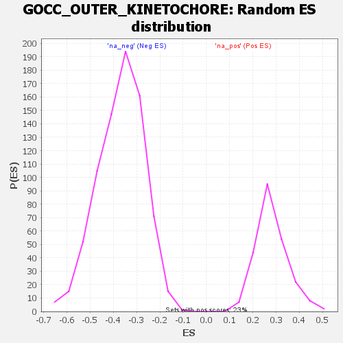

| | | Dataset | all_genes |
| Phenotype | NoPhenotypeAvailable |
| Upregulated in class | na_pos |
| GeneSet | GOCC_OUTER_KINETOCHORE |
| Enrichment Score (ES) | 0.7209819 |
| Normalized Enrichment Score (NES) | 2.5520265 |
| Nominal p-value | 0.0 |
| FDR q-value | 3.765625E-4 |
| FWER p-Value | 0.001 |
Table: GSEA Results Summary
 Fig 1: Enrichment plot: GOCC_OUTER_KINETOCHORE
Fig 1: Enrichment plot: GOCC_OUTER_KINETOCHORE
Profile of the Running ES Score & Positions of GeneSet Members on the Rank Ordered List
| SYMBOL | RANK IN GENE LIST | RANK METRIC SCORE | RUNNING ES | CORE ENRICHMENT | | 1 | NDC80 | 326 | 2.090 | 0.0796 | Yes |
| 2 | BUB1 | 352 | 2.049 | 0.1754 | Yes |
| 3 | BUB1B | 407 | 1.981 | 0.2662 | Yes |
| 4 | SKA2 | 1008 | 1.540 | 0.3031 | Yes |
| 5 | CCNB1 | 1053 | 1.509 | 0.3721 | Yes |
| 6 | SPDL1 | 1117 | 1.475 | 0.4384 | Yes |
| 7 | NUF2 | 1171 | 1.456 | 0.5043 | Yes |
| 8 | SKA1 | 1606 | 1.286 | 0.5392 | Yes |
| 9 | SPC25 | 1898 | 1.184 | 0.5778 | Yes |
| 10 | PMF1 | 2118 | 1.108 | 0.6172 | Yes |
| 11 | SPC24 | 2384 | 1.034 | 0.6503 | Yes |
| 12 | SKA3 | 2647 | 0.969 | 0.6804 | Yes |
| 13 | CENPF | 2724 | 0.951 | 0.7210 | Yes |
| 14 | PLK1 | 4974 | 0.508 | 0.6089 | No |
| 15 | MIS12 | 5051 | 0.494 | 0.6278 | No |
| 16 | ZWINT | 5352 | 0.437 | 0.6304 | No |
| 17 | KNL1 | 5397 | 0.427 | 0.6480 | No |
| 18 | BOD1 | 6397 | 0.245 | 0.5992 | No |
| 19 | NSL1 | 6713 | 0.193 | 0.5893 | No |
| 20 | DSN1 | 8391 | -0.112 | 0.4930 | No |
Table: GSEA details [plain text format]

Fig 2: GOCC_OUTER_KINETOCHORE: Random ES distribution
Gene set null distribution of ES for GOCC_OUTER_KINETOCHORE